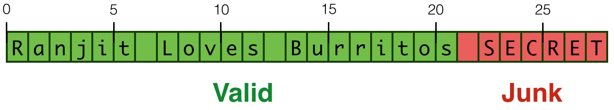

chop :: String -> Int -> String
chop s n = s'
where
b = pack s -- down to low-level
b' = unsafeTake n b -- grab n chars
s' = unpack b' -- up to high-level
“HeartBleed” in Haskell (2/3)

Works if you use the valid prefix size
λ> let ex = "Ranjit Loves Jamon"
λ> heartBleed ex 10
"Ranjit Lov"
“HeartBleed” in Haskell (3/3)
Leaks overflow buffer if invalid prefix size!
λ> let ex = "Ranjit Loves Jamon"
λ> heartBleed ex 30
"Ranjit Loves Jamon\NUL\201\&1j\DC3\SOH\NUL"
Types Against Overflows
Strategy: Specify and Verify Types for
Low-level Pointer API
Lib-level ByteString API
User-level Application API
Errors at each level are prevented by types at lower levels
1. Low-level Pointer API
Strategy: Specify and Verify Types for
Low-level Pointer API
Lib-level ByteString API
User-level Application API
Errors at each level are prevented by types at lower levels
API: Types
Low-level Pointers
data Ptr a
Foreign Pointers
data ForeignPtr a
ForeignPtr wraps around Ptr; can be exported to/from C.
API: Operations (1/2)
Read
peek :: Ptr a -> IO a
Write
poke :: Ptr a -> a -> IO ()
Arithmetic
plusPtr :: Ptr a -> Int -> Ptr b
API: Operations (2/2)
Create
malloc :: Int -> ForeignPtr a
Unwrap and Use
withForeignPtr :: ForeignPtr a -- pointer
-> (Ptr a -> IO b) -- action
-> IO b -- result
Example
Allocate a block and write 4 zeros into it
zero4 = do fp <- malloc 4
withForeignPtr fp $ \p -> do
poke (p `plusPtr` 0) zero
poke (p `plusPtr` 1) zero
poke (p `plusPtr` 2) zero
poke (p `plusPtr` 3) zero
return fp
where
zero = 0 :: Word8
Example
How to prevent overflows e.g. writing 5 or 50 zeros into 4-byte block ?
Step 1
Refine pointers with allocated size
Step 2
Track sizes in pointer operations
Refined API: Types
1. Refine pointers with allocated size
measure plen :: Ptr a -> Int
measure fplen :: ForeignPtr a -> Int
Abbreviations for pointers of size N
type PtrN a N = {v:_ | plen v = N}
type ForeignPtrN a N = {v:_ | fplen v = N}
Refined API: Ops (1/3)
Create
malloc :: n:Nat -> ForeignPtrN a n
Unwrap and Use
withForeignPtr :: fp:ForeignPtr a -- pointer
-> (PtrN a (fplen fp) -> IO b) -- action
-> IO b -- use
Refined API: Ops (2/3)
Arithmetic
Refine type to track remaining buffer size
plusPtr :: p:Ptr a
-> o:{Nat | o <= plen p} -- offset in bounds
-> PtrN b {plen b - o} -- remainder
Refined API: Ops (3/3)
Read & Write require non-empty remaining buffer
Read
peek :: {v:Ptr a | 0 < plen v} -> IO a
Write
poke :: {v:Ptr a | 0 < plen v} -> a -> IO ()
Example: Overflow Prevented
How to prevent overflows e.g. writing 5 or 50 zeros?
exBad = do fp <- malloc 4
withForeignPtr fp $ \p -> do
poke (p `plusPtr` 0) zero
poke (p `plusPtr` 1) zero
poke (p `plusPtr` 2) zero
poke (p `plusPtr` 5) zero
return fp
where
zero = 0 :: Word8
2. ByteString API
Strategy: Specify and Verify Types for
Low-level Pointer API
Lib-level ByteString API
User-level Application API
Errors at each level are prevented by types at lower levels
{-@ create :: n:Nat -> (PtrN Word8 n -> IO ())
-> ByteStringN n @-}
Implementation
create n fill = unsafePerformIO $ do
fp <- malloc n
withForeignPtr fp fill
return (PS fp 0 n)
API pack : Convert List of Char into ByteString
Specification
{-@ pack :: s:String -> ByteStringN (len s) @-}
Implementation
pack str = create n $ \p -> go p xs
where
n = length str
xs = map c2w str
go p (x:xs) = poke p x >> go (plusPtr p 1) xs
go _ [] = return ()
API unsafeTake : Extract prefix of size n
Specification
{-@ unsafeTake :: n:Nat
-> b:{ByteString | n <= bLen b}
-> ByteStringN n @-}
Implementation
unsafeTake n (PS x s l) = PS x s n
API unpack : Convert ByteString into List of Char
Specification
unpack :: b:ByteString -> StringN (bLen b)
Implementation
unpack b = you . get . the . idea -- see source
{-@ qualif Unpack(v:a, acc:b, n:int) : len v = 1 + n + len acc @-}
{-@ unpack :: b:ByteString -> StringN (bLen b) @-}
unpack :: ByteString -> String
unpack (PS _ _ 0) = []
unpack (PS ps s l) = unsafePerformIO $ withForeignPtr ps $ \p ->
go (p `plusPtr` s) (l - 1) []
where
go p 0 acc = peek p >>= \e -> return (w2c e : acc)
go p n acc = peek (p `plusPtr` n) >>= \e -> go p (n-1) (w2c e : acc)
3. Application API
Strategy: Specify and Verify Types for
Low-level Pointer API
Lib-level ByteString API
User-level Application API
Errors at each level are prevented by types at lower levels
Revisit “HeartBleed”
Lets revisit our potentially “bleeding” chop
{-@ type StringN N = {v:String | len v = N} @-}
{-@ chop :: s:String
-> n:{Nat | n <= len s}
-> StringN n
@-}
chop s n = s'
where
b = pack s -- down to low-level
b' = unsafeTake n b -- grab n chars
s' = unpack b' -- up to high-level
“HeartBleed” no more
demo = [ex6, ex30]
where
ex = "St. Louis" -- has size 9
ex6 = chop ex 6 -- ok
ex30 = chop ex 30 -- out of bounds
“Bleeding” chop ex 30rejected by compiler
Recap: Types vs Overflows
Strategy: Specify and Verify Types for
Low-level Pointer API
Lib-level ByteString API
User-level Application API
Errors at each level are prevented by types at lower levels
Bonus Material
Nested ByteStrings
For a more in depth example, let’s take a look at group, which transforms strings like
"foobaaar"
into lists of strings like
["f","oo", "b", "aaa", "r"].
The specification is that group should produce a list of ByteStrings
that are all non-empty (safety)
the sum of whose lengths is equal to the length of the input string (precision)
We use the type alias
{-@ type ByteStringNE = {v:ByteString | bLen v > 0} @-}
to specify (safety) and introduce a new measure
{-@ measure bLens :: [ByteString] -> Int
bLens ([]) = 0
bLens (x:xs) = (bLen x + bLens xs)
@-}
to specify (precision). The full type-specification looks like this:
{-@ group :: b:ByteString -> {v: [ByteStringNE] | bLens v = bLen b} @-}
group xs
| null xs = []
| otherwise = let y = unsafeHead xs
(ys, zs) = spanByte (unsafeHead xs) (unsafeTail xs)
in (y `cons` ys) : group zs
As you can probably tell, spanByte appears to be doing a lot of the work here, so let’s take a closer look at it to see why the post-condition holds.
spanByte :: Word8 -> ByteString -> (ByteString, ByteString)
spanByte c ps@(PS x s l) = unsafePerformIO $ withForeignPtr x $ \p ->
go (p `plusPtr` s) 0
where
go p i | i >= l = return (ps, empty)
| otherwise = do c' <- peekByteOff p i
if c /= c'
then return (unsafeTake i ps, unsafeDrop i ps)
else go p (i+1)
LiquidHaskell infers that 0 <= i <= l and therefore that all of the memory accesses are safe. Furthermore, due to the precise specifications given to unsafeTake and unsafeDrop, it is able to prove that spanByte has the type
{-@ spanByte :: Word8 -> b:ByteString -> (ByteStringPair b) @-}
where ByteStringPair b describes a pair of ByteStrings whose lengths sum to the length of b.
{-@ type ByteStringPair B = (ByteString, ByteString)<{\x1 x2 ->
bLen x1 + bLen x2 = bLen B}> @-}
-----------------------------------------------------------------------
-- Helper Code
-----------------------------------------------------------------------
{-@ unsafeCreate :: l:Nat -> ((PtrN Word8 l) -> IO ()) -> (ByteStringN l) @-}
unsafeCreate n f = create n f -- unsafePerformIO $ create n f
{-@ invariant {v:ByteString | bLen v >= 0} @-}
{-@ invariant {v:[ByteString] | bLens v >= 0} @-}
{-@ qualif PLLen(v:a, p:b) : (len v) <= (plen p) @-}
{-@ qualif ForeignPtrN(v:ForeignPtr a, n:int): fplen v = n @-}
{-@ qualif FPLenPLen(v:Ptr a, fp:ForeignPtr a): fplen fp = plen v @-}
{-@ qualif PtrLen(v:Ptr a, xs:List b): plen v = len xs @-}
{-@ qualif PlenEq(v: Ptr a, x: int): x <= (plen v) @-}
{-@ unsafeHead :: {v:ByteString | (bLen v) > 0} -> Word8 @-}
unsafeHead :: ByteString -> Word8
unsafeHead (PS x s l) = liquidAssert (l > 0) $
unsafePerformIO $ withForeignPtr x $ \p -> peekByteOff p s
{-@ unsafeTail :: b:{v:ByteString | (bLen v) > 0}
-> {v:ByteString | (bLen v) = (bLen b) - 1} @-}
unsafeTail :: ByteString -> ByteString
unsafeTail (PS ps s l) = liquidAssert (l > 0) $ PS ps (s+1) (l-1)
{-@ null :: b:ByteString -> {v:Bool | v <=> (bLen b == 0)} @-}
null :: ByteString -> Bool
null (PS _ _ l) = liquidAssert (l >= 0) $ l <= 0
{-@ unsafeDrop :: n:Nat
-> b:{v: ByteString | n <= (bLen v)}
-> {v:ByteString | (bLen v) = (bLen b) - n} @-}
unsafeDrop :: Int -> ByteString -> ByteString
unsafeDrop n (PS x s l) = liquidAssert (0 <= n && n <= l) $ PS x (s+n) (l-n)
{-@ cons :: Word8 -> b:ByteString -> {v:ByteString | (bLen v) = 1 + (bLen b)} @-}
cons :: Word8 -> ByteString -> ByteString
cons c (PS x s l) = unsafeCreate (l+1) $ \p -> withForeignPtr x $ \f -> do
poke p c
memcpy (p `plusPtr` 1) (f `plusPtr` s) (fromIntegral l)
{-@ empty :: {v:ByteString | (bLen v) = 0} @-}
empty :: ByteString
empty = PS nullForeignPtr 0 0
{-@ assume mallocForeignPtrBytes :: n:Nat -> IO (ForeignPtrN a n) @-}
{-@ type ForeignPtrN a N = {v:ForeignPtr a | fplen v = N} @-}
{-@ malloc :: n:Nat -> IO (ForeignPtrN a n) @-}
malloc = mallocForeignPtrBytes
{-@ assume
c_memcpy :: dst:(PtrV Word8)
-> src:(PtrV Word8)
-> size: {v:CSize | (v <= (plen src) && v <= (plen dst))}
-> IO (Ptr Word8)
@-}
foreign import ccall unsafe "string.h memcpy" c_memcpy
:: Ptr Word8 -> Ptr Word8 -> CSize -> IO (Ptr Word8)
{-@ memcpy :: dst:(PtrV Word8)
-> src:(PtrV Word8)
-> size: {v:CSize | (v <= (plen src) && v <= (plen dst))}
-> IO ()
@-}
memcpy :: Ptr Word8 -> Ptr Word8 -> CSize -> IO ()
memcpy p q s = c_memcpy p q s >> return ()
{-@ assume nullForeignPtr :: {v: ForeignPtr Word8 | (fplen v) = 0} @-}
nullForeignPtr :: ForeignPtr Word8
nullForeignPtr = unsafePerformIO $ newForeignPtr_ nullPtr
{-# NOINLINE nullForeignPtr #-}